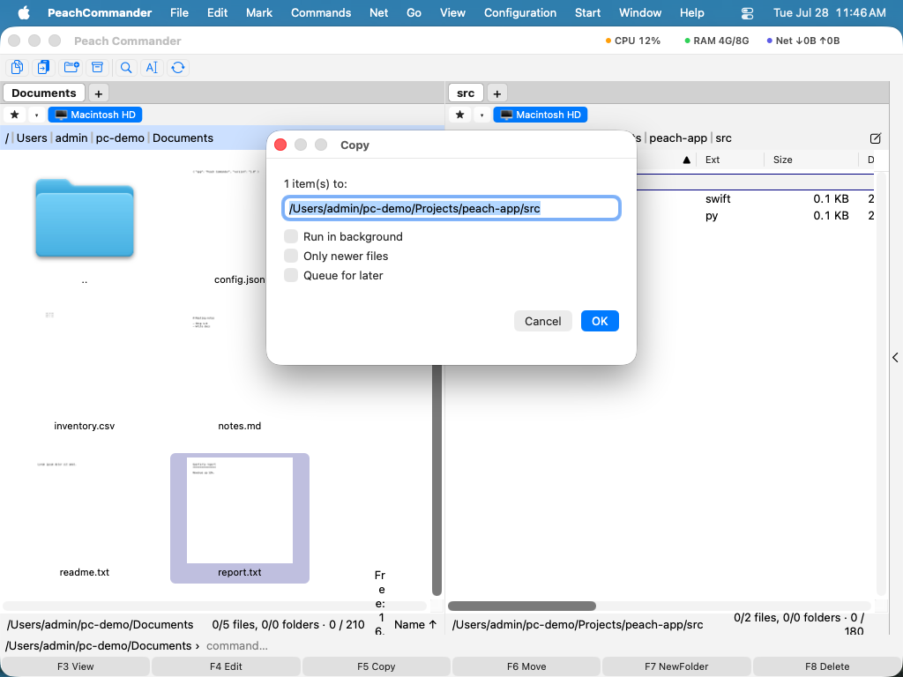

Переміщення та перейменування
Переміщення переносить файли та теки замість того, щоб дублювати їх, а перейменування змінює їхні назви, не торкаючись вмісту. Оскільки Peach Commander показує дві панелі поруч, переміщення зводиться до того, щоб вибрати потрібне в одній панелі та надіслати до теки, відкритої в іншій. Ви також можете перейменувати елемент на місці або дати переміщеним елементам нові назви на льоту за допомогою маски із символами підстановки.
Перемістити файли на іншу панель
- У панелі-джерелі відкрийте теку, що містить елементи, які потрібно перемістити, а в іншій панелі відкрийте теку призначення.
- Позначте файл або теку для переміщення. Щоб перемістити кілька одразу, спершу позначте їх усі (див. Позначення файлів).
- Натисніть F6 або виберіть Файл > Перемістити.
- Перевірте теку призначення, показану в діалоговому вікні, і клацніть OK (або натисніть Return), щоб почати переміщення.

(Ілюстрація: Діалогове вікно переміщення використовує те саме поле призначення, що й копіювання — введіть шлях або додайте маску із символами підстановки, щоб перейменувати під час переміщення.)Переміщення в межах одного диска відбувається майже миттєво. Коли призначення на іншому диску, Peach Commander копіює елементи, а потім вилучає оригінали лише після того, як кожен файл безпечно прибув.
Перейменування на місці
- Позначте один файл або теку.
- Натисніть Shift+F6 або виберіть Файл > Перейменувати.
- Відредагуйте назву безпосередньо в панелі, потім натисніть Return для підтвердження або Esc для скасування.
Перейменування під час переміщення
Поле призначення в діалоговому вікні переміщення приймає маску із символами підстановки, тож ви можете перейменовувати елементи під час переміщення:
- Позначте елементи та натисніть F6.
- У полі призначення додайте маску назви після теки призначення, наприклад
/Users/you/Archive/*_backup.*. *означає оригінальну назву, а.*— оригінальне розширення. Підтвердьте, щоб перемістити та перейменувати за один крок.
Комбінації клавіш
| Дія | Комбінація |
|---|---|
| Перемістити на іншу панель | F6 |
| Перейменувати на місці | Shift+F6 |
Поради
- Діалогове вікно переміщення пропонує ту саму кнопку параметрів і прапорець фонової черги, що й копіювання, тож ви можете поставити в чергу великі переміщення й дати їм виконуватися у фоні.
- Переміщення в межах одного диска є швидкою операцією на місці, тож воно безпечне для дуже великих тек. Переміщення між дисками триває довше, бо дані спершу копіюються, а потім джерело видаляється.
- Щоб перейменувати багато файлів одразу з нумерацією, пошуком-і-заміною чи шаблонами, скористайтеся натомість Інструментом групового перейменування (див. Групове перейменування).